Code
# %pip install mobspy
# %pip install tqdm
import mobspy as mp
import tqdm
import matplotlib.pyplot as plt
figsize = (5,4)This chapter covers concepts and techniques from distributed algorithms:
Let’s start by importing libraries we will need:
# %pip install mobspy
# %pip install tqdm
import mobspy as mp
import tqdm
import matplotlib.pyplot as plt
figsize = (5,4)Distributed Computing studies computation in distributed systems. Examples for distributed systems are:
A fixed set of (computing) nodes that are interconnected via a dedicated network infrastructure. An example is a scientific cluster, the computer system of a bank, or a computer system in an airplane.
A dynamically changing set of nodes interconnected by a dynamic network. An example is a peer-to-peer network of phones, a swarm of drones, or a network of wireless sensors thrown into the landscape.
Distributed systems are not necessarily classical computers, but can be anything with a specified (but not necessarily deterministic!) behavior. We may as well have chosen as examples:
Fixed architecture: Cells in a (non growing) tissue that communicate via hormones or electric signals.
Dynamic architecture: Opinions of humans formed via social networks, or suspended bacteria in a liquid culture communicating via small molecules or via the exchange of DNA.
While the discipline of distributed computing tries to abstract from the application, the majority of research is on systems with computer networks in mind, with respective assumptions on the system.
We will look at one problem that has been extensively studied in distributed computing: the problem of converging from an initial mixed population to a homogenous population of nodes.
Many variants of the, so called, consensus problems, exist, differing in static vs. dynamic architecture, discrete vs. continuous values, terminating vs. non-terminating algorithms, etc. The problem was traditionally studied in networks with a fixed architecture, and with some of the computing nodes potentially failing. Applications for this problem are, e.g., in redundant databases where each server has a certain state and servers need to agree on a unique state.
Assume we are given a population of two kinds of species, A (blue) and B (orange). The problem is to determine which of them is in majority.
An input instance of this problem may look like this where we have \(A = 51\) and \(B = 49\) species.
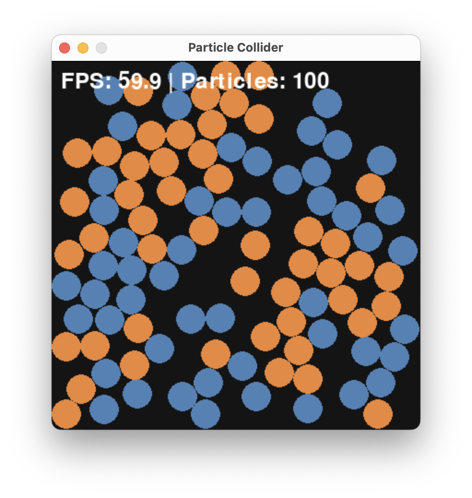
While it would be tedious to count A vs. B, it is still possible and this would be a so-called centralized solution where we play the role of the central processing unit.
However, this solution would not scale well with the problem size. What is the majority, here? (The answer is A with 551 vs 549)
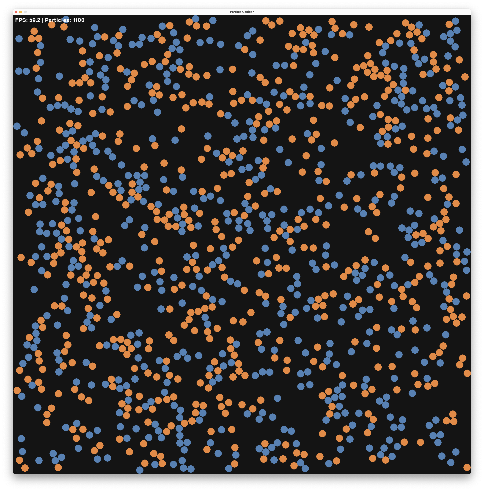
For a distributed solution, we distributed the computation across different units - in our case, the units will be the species itself with super simple, but local, computations.
We first need to define what are the “rules of the game” and clarify some wording in the problem statement.
Let’s assume that species move, like we saw in the CRN lecture. Further, we assume that a distributed algorithm will define the local behavior of the species. While we resort from modifying speed, and angle, we will allow an algorithm only to change the type of two species upon local (geometric), that is colliding, interaction. In particular an algorithm is allowed to change or remove a species.
Finally, we need to clarify what the outcome of such a distributed computation should be.In particular, how to signal that A or B is in majority. One option would be that each species needs to output this result, but we take a different direction, here. We say that the algorithm outputs A once all species are A and it outputs B once all species are B. In particular this means that a (bad) algorithm could never terminate by never reaching the state where all species are from one population.
Many solutions to this problem exist, including a deceptively simple one that has a single rule:
\[ A + B \rightarrow \emptyset + \emptyset \]
If two opposing species collide, they both vanish. The algorithm is indeed a CRN and we simply write
\[ A + B \rightarrow \emptyset \]
We coded a small particle collider that you can find in src/particle_collider.py that allows one to run and visualize such CRN systems. You can find the code here and works as a standalone Python script. Running the algorithm for a while, starting from \(A = 51\) and \(B = 49\), we get:
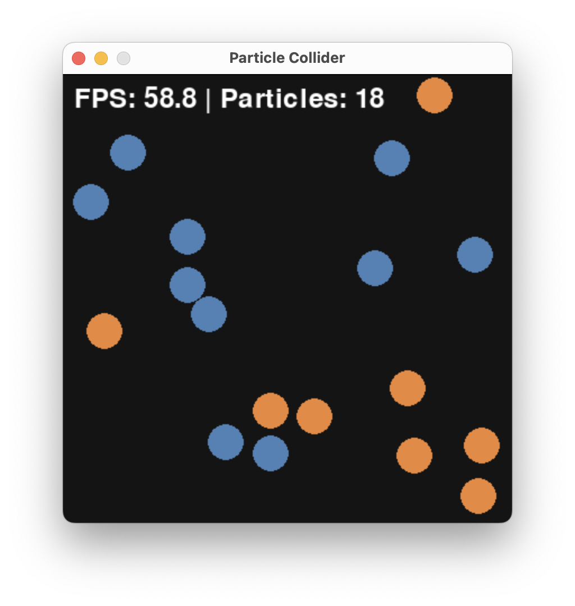
and finally
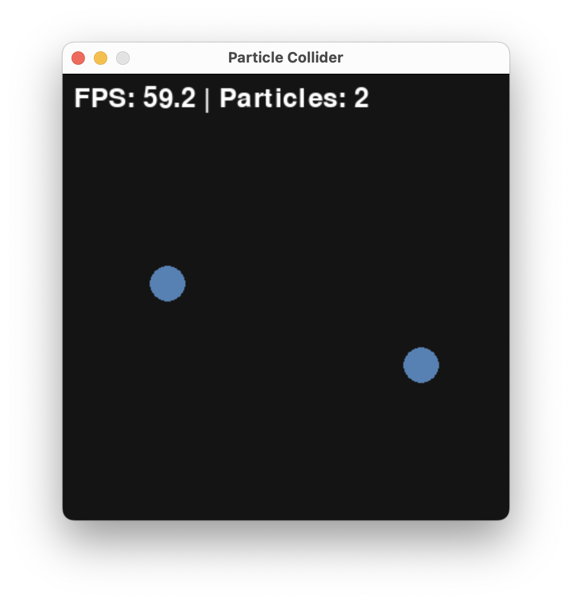
Resulting in the outcome that A was the initial majority.
Here, is a plot of A and B over time generated by particle_collider.py.
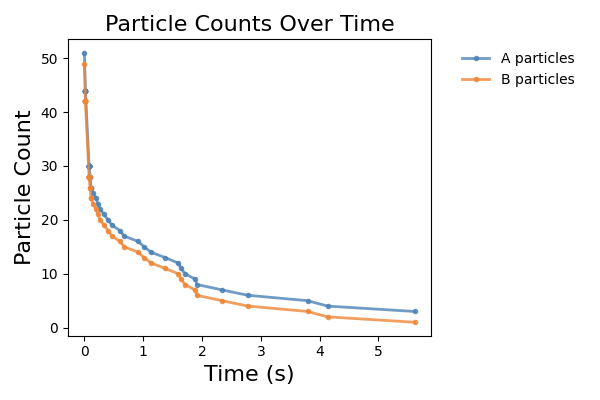
We observe a fast convergence to consensus with only A being left.
Typically we want to:
Both can be done by different approaches yielding different guarantees.
The simplest one would be to run the particle_collider.py several times and check the outcome. This takes time (for the current pygame implementation about 20s each run).
But, using the insights from the CRN lecture, we do not need to simulate colliding balls. We can approximate this system via a well-mixed CRN system. Let’s code this in MobsPy and run it.
delta = 0.1 * mp.u.ul / mp.u.s
repetitions = 3
duration = 10 * mp.u.s
volume = 1 * mp.u.ul
A, B = mp.BaseSpecies()
A(51)
B(49)
# competition
A + B >> mp.Zero [delta]
Sim = mp.Simulation(A | B)
Sim.run(
duration=duration,
volume=volume,
simulation_method="stochastic",
repetitions=repetitions,
unit_y=1 / volume,
plot_data=False,
)
T = Sim.results['Time']
A = Sim.results['A']
B = Sim.results['B']
plt.figure(figsize=figsize)
plt.plot(T[0], A[0], label='A')
plt.plot(T[0], B[0], label='B')
plt.xlabel('time (s)')
plt.ylabel(r'count $\mu$L${}^{-1}$')
plt.legend()
plt.show()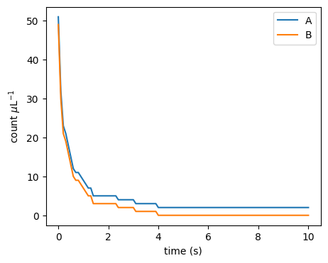
As expected, the outcome is qualitatively the same as before. To make it behave the same quantitativley, we have to adjust the parameter \(\delta\).
Question: The parameter \(\delta\) is influenced by the initial particle speeds, their radius, and the volume of the box. How would you measure it in the particle collider?
While running stochastic simulations in the CRN simulator is much faster than physical simulation, we can do even better to ensure correctness and get bounds on the performance.
Indeed, the correctness of the algorithm follows from two observations:
Use the CRN lecture’s approximation of the billiard system as a Markov chain. Within this one, if there is an A and a B they will eventually collide and decrease the total population count by 2.
If there are, say, A > B > 0 species in the system, than after a collision between an A and a B there are A - 1 > B - 1 species in the system. This means that the difference A - B remains constant throughout the execution.
Let us write this down in a rigorous mathematical way with a statement and a proof.
Lemma 1. For the CRN \(A + B \xrightarrow{\gamma} \emptyset\) with rate constant \(\gamma > 0\), \(A > 0\) and \(B > 0\), the time \(T\) to the first collision satisfies \(\mathbb{P}(T = \infty) = 0\) and \(\mathbb{E}[T] = \frac{1}{\gamma A B}\).
Proof. By definition of reaction’s kinetics, \(T \sim \mathrm{Exp}(\gamma AB)\), so \(\mathbb{P}(T>t) = e^{-\gamma AB\,t}\). Then \[ \mathbb{P}(T=\infty) = \lim_{t\to\infty} e^{-\gamma AB\,t} = 0\] from which the first claim follows. Further, \[\mathbb{E}[T] = \int_0^\infty e^{-\gamma AB\,t}\,dt = \frac{1}{\gamma AB}\] from which the second claim follows. \(\square\)
Lemma 2. Consider the CRN with the single reaction \(A + B \to \emptyset\). For any execution, the quantity \(A - B\) is invariant: for all times \(t \geq 0\), \[A(t) - B(t) = A(0) - B(0).\]
Proof. The proof is by induction on the number of collision events \(k \geq 0\).
Base case (\(k = 0\)): Before any collision, \(A - B = A(0) - B(0)\).
Inductive step: Suppose \(A - B = A(0) - B(0)\) holds after \(k\) collisions and assume that there is \((k+1)\)-th transition happening (otherwise, the statement follows immediately). Then \(A > 0\) and \(B > 0\) must hold before the reaction happens. Applying the reaction, decrements both \(A\) and \(B\) by \(1\) simultaneously, so for the new counts \(A', B'\), one has \[ A' - B' = (A - 1) - (B - 1) = A - B = A(0) - B(0). \] The claim therefore holds after \(k + 1\) collisions. \(\square\)
We are now in the position to assemble all into a correctness proof of the algorithm.
Theorem (Correctness). For the CRN \(A + B \xrightarrow{\gamma} \emptyset\) with \(\gamma > 0\), if \(A(0) \neq B(0)\), then with probability \(1\) the algorithm terminates: the minority species is fully annihilated and \(|A(0)-B(0)|\) molecules of the majority species survive.
Proof. Assume without loss of generality \(A(0) > B(0)\). By Lemma 2, \(A(t) - B(t) = A(0) - B(0) > 0\) at all times \(t \geq 0\), so \(A(t) > B(t) \geq 0\). In particular \(A(t) > 0\) throughout. As long as \(B(t) > 0\), Lemma 1 guarantees the next collision occurs almost surely (i.e., with probability 1). Each collision decrements \(B\) by \(1\). Since \(B(0)\) is finite and \(B\) is non-negative integer-valued, after exactly \(B(0)\) such collisions, each occurring with probability \(1\), we reach \(B = 0\) and \(A = A(0) - B(0) > 0\). Put otherwise, \(A\) survives and \(B\) does not survive. The statement follows. \(\square\)
We can also use math to show that it is fast.
Question: Before you continue reading, try to show that the algorithm converges quickly. In fact it converges as quickly as in expected time \(O(1)\). Thus this stunning as it is a constant time algorithm!
A standard way of signaling between digital gates, like a NAND (\(z = \neg (x \wedge y)\)), is to encode the logical value in terms of low and high voltage. For example, anything in \([0V, 0.3V]\) is a clean 0 and anything in \([0.7V, 1V]\) a clean 1.
Some circuits make use of different encodings. One such encoding is dual-rail encoding is circuits that diverge from the classical synchronous design paradigm, so called asynchronous circuits.
Side note: The term “asynchronous” is a bit misleading as it can be understood as time-less, though many asynchronous circuits make explicit use of timing constraints. In fact, nowadays the distinction between synchronous and asynchronous is vanishing, as the classical synchronous abstraction can only be maintained in conservative designs.
In dual-rail encoding, 0 and 1 are signaled on dedicated wires. Raising the voltage on the 0-wire signals a 0, and vice versa.
Side note: Encodings differ in how to communicate several logical values. An option there is to let any transition on a wire signal a logical value. Care has to be taken that a transition occurs only after it is read by all downstream gates. This is typically either ensured by explicit handshaking, or delay constraints.
Ths concept is closely related to 1-hot-encoding in CS and differential signalling in EE.
We will borrow this concept of dual-rail encoding in the context of a biological circuit, to amplify a signal value. In particular it has two interesting properties that we will make use of:
Producing a signal can be costly in the biological context (e.g., transcribing, translating, secreting). We may thus want the circuit to produce no output initially and only produce an output once there is something to compute. Compare a chain of inverters in single rail signaling vs. one in dual rail signaling. In the former there is no notion of waiting until the first input arrives. Every second inverter is generating a costly 1. In the second case, no inverter is generating an output initially. However, after an input, every inverter is generating exactly one 1.
Amplifying a single-rail signal is difficult. It requires an amplification against its a midpoint signal value towards 0 and 1. In dual-rail encoding amplification is easier: it requires that only one of the two rails prevails - a property that sounds like a job for Majority Consensus.
In electrical circuits, the digital abstraction is enabled by operational amplifiers. In fact, every logical gate in an electrical circuit has an amplifier at its output:
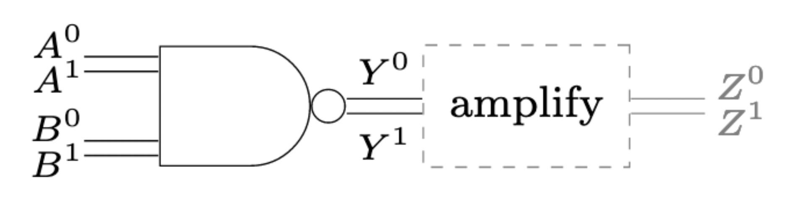
Without these output amplifiers, inter-gate signals would not be clean 0-or-1 signals, but rather analog signals, invalidating the digital abstraction. We have seen in previous lectures that standard microbiological amplification is rather weak, with maximal Hill exponents in the order of \(n\approx 3\). When distributing a circuit to different bacteria types, the question of a better amplification becomes important.
Mimicking the behavior an operational amplifier, we will build a differential amplifier. This circuit component amplifies the difference between the two rails of a dual-rail encoded binary signal:
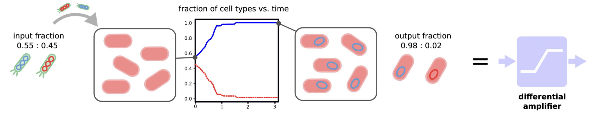
Choosing the specific threshold ratio for initial concentrations of 50%, a perfect output signal is achieved when majority consensus is solved:
The building block of a differential amplifier enables effective distribution of circuits:
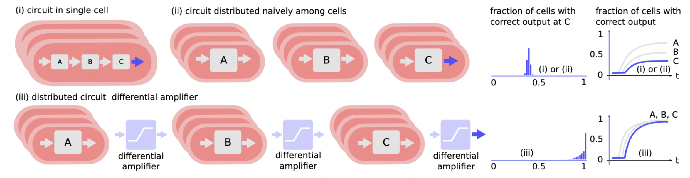
We can almost use our algorithm from before to solve Majority Consensus in teh context of bacteria A and B. There remains only two problems: (1) how to implement the algorithm and (2) bacteria duplicate. We will address (1) right now and for (2) let us add duplication rules to the CRN:
\[\begin{align} A &\rightarrow A + A\\ B &\rightarrow B + B\\ A + B &\rightarrow \emptyset \end{align}\]
Side note: For duplication we chose a very simple model, here: exponential growth independent of a resource.
We analyzed this algorithm in Da-Jung Cho, Függer, Hopper, Kushwaha, Nowak, and Soubeyran. Distributed Computing. One can show that it does not always solve Majority Consensus, but with high probability solves it (in a sense made precise in the paper).
This simple algorithm is the Pairwise Annihilation algorithm, and it does exactly what it sounds like:
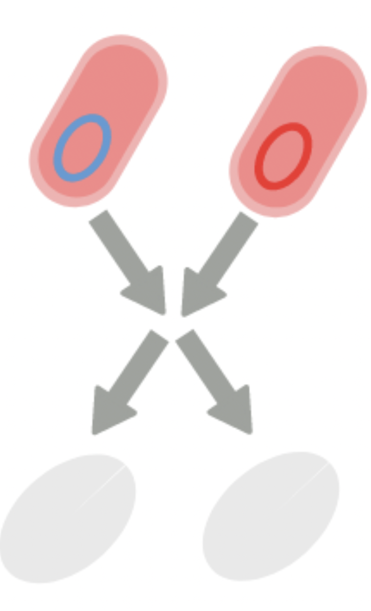
That is, we have two types of bacteria, and whenever they meet, they annihilate each other. In addition to that, each bacterium duplicates at a uniform rate \(\mu\). For the time being, we chose to ignore certain aspects of real bacterial systems, for example:
While the rule
\[ A + B \rightarrow \emptyset \]
is a simplification of direct competition between A and B, one can think of implementing direct competition via bacterial conjugation, where cells can copy DNA over to physically close cells.
Let us start by simulating the protocol’s behavior using MobsPy. For a first try we resort to deterministic (ODE) semantics.
def simulate_pa(A0, B0, mu: float=1/30, delta: float=5e-10, duration = 60.0 * mp.u.min, stochastic: bool=True, repetitions: int=1) -> dict:
Bacterium = mp.BaseSpecies()
# growth
Bacterium >> Bacterium + Bacterium [mu / mp.u.min]
A, B = mp.New(Bacterium)
A(A0)
B(B0)
# competition
A + B >> mp.Zero [delta * mp.u.ul / mp.u.min]
Sim = mp.Simulation(A | B)
Sim.run(
duration=duration,
volume=1*mp.u.ul,
simulation_method="stochastic" if stochastic else "deterministic",
repetitions=repetitions,
unit_y=1 / mp.u.uL,
plot_data=False,
level=0,
)
T = Sim.results['Time']
A = Sim.results['A']
B = Sim.results['B']
return {'T': T, 'A': A, 'B': B}
def plot_pa_over_time(T, A, B) -> None:
plt.figure(figsize=figsize)
plt.plot(T[0], A[0], label='A')
plt.plot(T[0], B[0], label='B')
plt.xlabel('time (min)')
plt.ylabel(r'count $\mu$L${}^{-1}$')
plt.legend()
plt.show()
result = simulate_pa(
51 / mp.u.uL,
49 / mp.u.uL,
mu=1.0,
delta=1.0,
duration = 2 * mp.u.min,
stochastic=False
)
plot_pa_over_time(**result)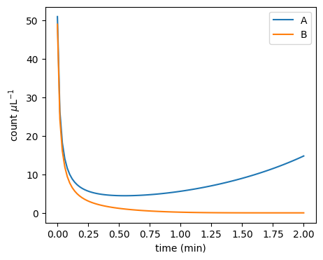
It turns out that the protocol is very sensitive to changes around the 50-50 initial configuration:
plot_pa_over_time(**simulate_pa(3.00000000e5 / mp.u.uL, 3e5 / mp.u.uL, duration=1000 * mp.u.min, stochastic=False))
plot_pa_over_time(**simulate_pa(3.00000001e5 / mp.u.uL, 3e5 / mp.u.uL, duration=1000 * mp.u.min, stochastic=False))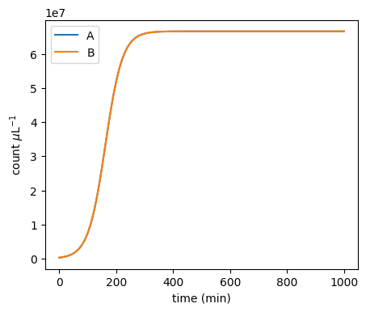
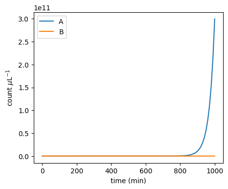
Moreover, the stochastic dynamics can be very different from the ODE dynamics:
plot_pa_over_time(**simulate_pa(51 / mp.u.uL, 49 / mp.u.uL, mu=1.0, delta=1.0, duration=2 * mp.u.min, stochastic=False))
plot_pa_over_time(**simulate_pa(51 / mp.u.uL, 49 / mp.u.uL, mu=1.0, delta=1.0, duration=2 * mp.u.min, stochastic=True))
WARNING: The stochastic simulation rounds floats to integers WARNING: The stochastic simulation rounds floats to integers
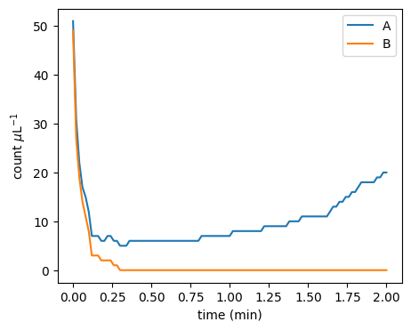
It turns out that the initial majority doesn’t always prevail:
def fraction_won(A0, B0, repetitions: int=1000, **kwargs) -> dict[str, float]:
cnt_A_won: int = 0
cnt_B_won: int = 0
result = simulate_pa(A0=A0 / mp.u.uL , B0=B0 / mp.u.uL, stochastic=True, repetitions=repetitions, **kwargs)
for i in range(repetitions):
if result['A'][i][-1] == 0 and result['B'][i][-1] != 0:
cnt_B_won += 1
if result['B'][i][-1] == 0 and result['A'][i][-1] != 0:
cnt_A_won += 1
return {'A': cnt_A_won/repetitions,
'B': cnt_B_won/repetitions,
'neither': 1 - (cnt_A_won+cnt_B_won)/repetitions}
print(fraction_won(501, 499, mu=1.0, delta=1.0, duration=5 * mp.u.min))WARNING: The stochastic simulation rounds floats to integers WARNING: The stochastic simulation rounds floats to integers
{'A': 0.746, 'B': 0.232, 'neither': 0.02200000000000002}Let’s make a sweep over different initial ratios:
def fraction_A_won_ratio_sweep(total_pop: int, **kwargs) -> tuple[list[float], list[float]]:
ratios: list[float] = []
wins: list[float] = []
increment: int = 2
for A0 in tqdm.tqdm(range(0, total_pop+1, increment)):
B0 = total_pop - A0
ratios.append(A0/total_pop)
wins.append(fraction_won(A0, B0, **kwargs)['A'])
return ratios, wins
ratios, wins = fraction_A_won_ratio_sweep(100, repetitions=10, mu=1.0, delta=1.0, duration=5 * mp.u.min)0%| | 0/51 [00:00<?, ?it/s]WARNING: The stochastic simulation rounds floats to integers WARNING: The stochastic simulation rounds floats to integers 2%|▏ | 1/51 [00:00<00:21, 2.31it/s]WARNING: The stochastic simulation rounds floats to integers WARNING: The stochastic simulation rounds floats to integers 4%|▍ | 2/51 [00:00<00:21, 2.33it/s]WARNING: The stochastic simulation rounds floats to integers WARNING: The stochastic simulation rounds floats to integers 6%|▌ | 3/51 [00:01<00:20, 2.36it/s]WARNING: The stochastic simulation rounds floats to integers WARNING: The stochastic simulation rounds floats to integers 8%|▊ | 4/51 [00:01<00:19, 2.35it/s]WARNING: The stochastic simulation rounds floats to integers WARNING: The stochastic simulation rounds floats to integers 10%|▉ | 5/51 [00:02<00:19, 2.36it/s]WARNING: The stochastic simulation rounds floats to integers WARNING: The stochastic simulation rounds floats to integers 12%|█▏ | 6/51 [00:02<00:19, 2.36it/s]WARNING: The stochastic simulation rounds floats to integers WARNING: The stochastic simulation rounds floats to integers 14%|█▎ | 7/51 [00:02<00:18, 2.36it/s]WARNING: The stochastic simulation rounds floats to integers WARNING: The stochastic simulation rounds floats to integers 16%|█▌ | 8/51 [00:03<00:18, 2.33it/s]WARNING: The stochastic simulation rounds floats to integers WARNING: The stochastic simulation rounds floats to integers 18%|█▊ | 9/51 [00:03<00:18, 2.32it/s]WARNING: The stochastic simulation rounds floats to integers WARNING: The stochastic simulation rounds floats to integers 20%|█▉ | 10/51 [00:04<00:17, 2.35it/s]WARNING: The stochastic simulation rounds floats to integers WARNING: The stochastic simulation rounds floats to integers 22%|██▏ | 11/51 [00:04<00:16, 2.37it/s]WARNING: The stochastic simulation rounds floats to integers WARNING: The stochastic simulation rounds floats to integers 24%|██▎ | 12/51 [00:05<00:16, 2.37it/s]WARNING: The stochastic simulation rounds floats to integers WARNING: The stochastic simulation rounds floats to integers 25%|██▌ | 13/51 [00:05<00:16, 2.36it/s]WARNING: The stochastic simulation rounds floats to integers WARNING: The stochastic simulation rounds floats to integers 27%|██▋ | 14/51 [00:05<00:15, 2.35it/s]WARNING: The stochastic simulation rounds floats to integers WARNING: The stochastic simulation rounds floats to integers 29%|██▉ | 15/51 [00:06<00:15, 2.37it/s]WARNING: The stochastic simulation rounds floats to integers WARNING: The stochastic simulation rounds floats to integers 31%|███▏ | 16/51 [00:06<00:14, 2.38it/s]WARNING: The stochastic simulation rounds floats to integers WARNING: The stochastic simulation rounds floats to integers 33%|███▎ | 17/51 [00:07<00:14, 2.40it/s]WARNING: The stochastic simulation rounds floats to integers WARNING: The stochastic simulation rounds floats to integers 35%|███▌ | 18/51 [00:07<00:13, 2.39it/s]WARNING: The stochastic simulation rounds floats to integers WARNING: The stochastic simulation rounds floats to integers 37%|███▋ | 19/51 [00:08<00:13, 2.40it/s]WARNING: The stochastic simulation rounds floats to integers WARNING: The stochastic simulation rounds floats to integers 39%|███▉ | 20/51 [00:08<00:12, 2.40it/s]WARNING: The stochastic simulation rounds floats to integers WARNING: The stochastic simulation rounds floats to integers 41%|████ | 21/51 [00:08<00:12, 2.39it/s]WARNING: The stochastic simulation rounds floats to integers WARNING: The stochastic simulation rounds floats to integers 43%|████▎ | 22/51 [00:09<00:11, 2.42it/s]WARNING: The stochastic simulation rounds floats to integers WARNING: The stochastic simulation rounds floats to integers 45%|████▌ | 23/51 [00:09<00:11, 2.41it/s]WARNING: The stochastic simulation rounds floats to integers WARNING: The stochastic simulation rounds floats to integers 47%|████▋ | 24/51 [00:10<00:11, 2.41it/s]WARNING: The stochastic simulation rounds floats to integers WARNING: The stochastic simulation rounds floats to integers 49%|████▉ | 25/51 [00:10<00:10, 2.40it/s]WARNING: The stochastic simulation rounds floats to integers WARNING: The stochastic simulation rounds floats to integers 51%|█████ | 26/51 [00:10<00:10, 2.43it/s]WARNING: The stochastic simulation rounds floats to integers WARNING: The stochastic simulation rounds floats to integers 53%|█████▎ | 27/51 [00:11<00:09, 2.45it/s]WARNING: The stochastic simulation rounds floats to integers WARNING: The stochastic simulation rounds floats to integers 55%|█████▍ | 28/51 [00:11<00:09, 2.45it/s]WARNING: The stochastic simulation rounds floats to integers WARNING: The stochastic simulation rounds floats to integers 57%|█████▋ | 29/51 [00:12<00:08, 2.47it/s]WARNING: The stochastic simulation rounds floats to integers WARNING: The stochastic simulation rounds floats to integers 59%|█████▉ | 30/51 [00:12<00:08, 2.47it/s]WARNING: The stochastic simulation rounds floats to integers WARNING: The stochastic simulation rounds floats to integers 61%|██████ | 31/51 [00:12<00:08, 2.47it/s]WARNING: The stochastic simulation rounds floats to integers WARNING: The stochastic simulation rounds floats to integers 63%|██████▎ | 32/51 [00:13<00:07, 2.45it/s]WARNING: The stochastic simulation rounds floats to integers WARNING: The stochastic simulation rounds floats to integers 65%|██████▍ | 33/51 [00:13<00:07, 2.46it/s]WARNING: The stochastic simulation rounds floats to integers WARNING: The stochastic simulation rounds floats to integers 67%|██████▋ | 34/51 [00:14<00:06, 2.45it/s]WARNING: The stochastic simulation rounds floats to integers WARNING: The stochastic simulation rounds floats to integers 69%|██████▊ | 35/51 [00:14<00:06, 2.43it/s]WARNING: The stochastic simulation rounds floats to integers WARNING: The stochastic simulation rounds floats to integers 71%|███████ | 36/51 [00:15<00:06, 2.37it/s]WARNING: The stochastic simulation rounds floats to integers WARNING: The stochastic simulation rounds floats to integers 73%|███████▎ | 37/51 [00:15<00:05, 2.37it/s]WARNING: The stochastic simulation rounds floats to integers WARNING: The stochastic simulation rounds floats to integers 75%|███████▍ | 38/51 [00:15<00:05, 2.34it/s]WARNING: The stochastic simulation rounds floats to integers WARNING: The stochastic simulation rounds floats to integers 76%|███████▋ | 39/51 [00:16<00:05, 2.33it/s]WARNING: The stochastic simulation rounds floats to integers WARNING: The stochastic simulation rounds floats to integers 78%|███████▊ | 40/51 [00:16<00:04, 2.32it/s]WARNING: The stochastic simulation rounds floats to integers WARNING: The stochastic simulation rounds floats to integers 80%|████████ | 41/51 [00:17<00:04, 2.34it/s]WARNING: The stochastic simulation rounds floats to integers WARNING: The stochastic simulation rounds floats to integers 82%|████████▏ | 42/51 [00:17<00:03, 2.36it/s]WARNING: The stochastic simulation rounds floats to integers WARNING: The stochastic simulation rounds floats to integers 84%|████████▍ | 43/51 [00:18<00:03, 2.36it/s]WARNING: The stochastic simulation rounds floats to integers WARNING: The stochastic simulation rounds floats to integers 86%|████████▋ | 44/51 [00:18<00:02, 2.34it/s]WARNING: The stochastic simulation rounds floats to integers WARNING: The stochastic simulation rounds floats to integers 88%|████████▊ | 45/51 [00:18<00:02, 2.36it/s]WARNING: The stochastic simulation rounds floats to integers WARNING: The stochastic simulation rounds floats to integers 90%|█████████ | 46/51 [00:19<00:02, 2.35it/s]WARNING: The stochastic simulation rounds floats to integers WARNING: The stochastic simulation rounds floats to integers 92%|█████████▏| 47/51 [00:19<00:01, 2.37it/s]WARNING: The stochastic simulation rounds floats to integers WARNING: The stochastic simulation rounds floats to integers 94%|█████████▍| 48/51 [00:20<00:01, 2.36it/s]WARNING: The stochastic simulation rounds floats to integers WARNING: The stochastic simulation rounds floats to integers 96%|█████████▌| 49/51 [00:20<00:00, 2.36it/s]WARNING: The stochastic simulation rounds floats to integers WARNING: The stochastic simulation rounds floats to integers 98%|█████████▊| 50/51 [00:21<00:00, 2.34it/s]WARNING: The stochastic simulation rounds floats to integers WARNING: The stochastic simulation rounds floats to integers 100%|██████████| 51/51 [00:21<00:00, 2.38it/s]
plt.figure(figsize=figsize)
plt.xlabel('$A(0)/(A(0)+B(0))$')
plt.ylabel('fraction of $A$ wins')
plt.plot(ratios, wins)
plt.show()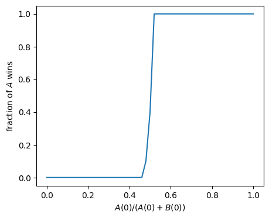
That’s a very steep amplification! Let’s zoom in:
def fraction_A_won_diff_sweep(total_pop: int, max_diff: int, **kwargs) -> tuple[list[int], list[float]]:
differences: list[int] = []
wins: list[float] = []
for A0 in tqdm.tqdm(range(total_pop//2-max_diff, total_pop//2+max_diff+1)):
B0 = total_pop - A0
differences.append(A0-B0)
wins.append(fraction_won(A0, B0, **kwargs)['A'])
return differences, wins
differences, wins_zoom = fraction_A_won_diff_sweep(1000, 5, repetitions=100, mu=1.0, delta=1.0, duration=5 * mp.u.min)0%| | 0/11 [00:00<?, ?it/s]WARNING: The stochastic simulation rounds floats to integers WARNING: The stochastic simulation rounds floats to integers 9%|▉ | 1/11 [00:01<00:14, 1.40s/it]WARNING: The stochastic simulation rounds floats to integers WARNING: The stochastic simulation rounds floats to integers 18%|█▊ | 2/11 [00:02<00:12, 1.37s/it]WARNING: The stochastic simulation rounds floats to integers WARNING: The stochastic simulation rounds floats to integers 27%|██▋ | 3/11 [00:04<00:11, 1.38s/it]WARNING: The stochastic simulation rounds floats to integers WARNING: The stochastic simulation rounds floats to integers 36%|███▋ | 4/11 [00:05<00:09, 1.42s/it]WARNING: The stochastic simulation rounds floats to integers WARNING: The stochastic simulation rounds floats to integers 45%|████▌ | 5/11 [00:06<00:08, 1.39s/it]WARNING: The stochastic simulation rounds floats to integers WARNING: The stochastic simulation rounds floats to integers 55%|█████▍ | 6/11 [00:08<00:06, 1.38s/it]WARNING: The stochastic simulation rounds floats to integers WARNING: The stochastic simulation rounds floats to integers 64%|██████▎ | 7/11 [00:09<00:05, 1.37s/it]WARNING: The stochastic simulation rounds floats to integers WARNING: The stochastic simulation rounds floats to integers 73%|███████▎ | 8/11 [00:11<00:04, 1.37s/it]WARNING: The stochastic simulation rounds floats to integers WARNING: The stochastic simulation rounds floats to integers 82%|████████▏ | 9/11 [00:12<00:02, 1.37s/it]WARNING: The stochastic simulation rounds floats to integers WARNING: The stochastic simulation rounds floats to integers 91%|█████████ | 10/11 [00:13<00:01, 1.36s/it]WARNING: The stochastic simulation rounds floats to integers WARNING: The stochastic simulation rounds floats to integers 100%|██████████| 11/11 [00:15<00:00, 1.38s/it]
plt.figure(figsize=figsize)
plt.xlabel('$A(0) - B(0)$ [$n=1000$]')
plt.ylabel('fraction of $A$ wins')
plt.plot(differences, wins_zoom)
plt.show()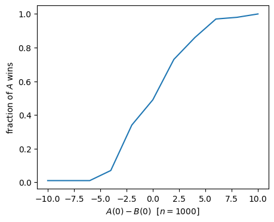
Given the two populations A and B, can we achieve the same amplification around 50:50 by simpler means? In particular do we really need an interaction among A and B that is involved to engineer?
Let’s start with an (oversimplified) system that contains only death reactions for A and B independently. In terms of an CRN this is
\[\begin{align} A &\rightarrow \emptyset\\ B &\rightarrow \emptyset \end{align}\]
Since in this system both A and B will die, we have to redefine the output of the distributed algorithm as the species that dies last.
Indeed we can show that the probability of A winning is:
\[A_0 / (A_0 + B_0).\]
In fact there is a simple argument by symmetry for this: any among the \(A_0 + B_0\) species dies independently from all others. By symmetry (all species are equal) they are equally likely to be the last one. For A to win it is now just the probability of one of the A species to be the last one. The statement follows.
However, \(A_0 / (A_0 + B_0)\) corresponds to no amplification.
Let us try arbitrary additions to the CRN to make it more realistic. However, without adding interactions among the species. For example, we can add duplication reactions for the species \(X \in \{A, B\}\) like
\[\begin{align} X &\rightarrow X + X \end{align}\]
as in the CRN problem session (2) or even duplication dependent on a common resource \(R\)
\[\begin{align} X + R &\rightarrow X + X \end{align}\]
or a continuous cultures model with in- and outflow
\[\begin{align} \emptyset &\rightarrow R\\ R &\rightarrow \emptyset \end{align}\]
All these additions do not change the fact that the initial individual (and its children) can be seen as independent systems that start in parallel and that win if they are the last one to die (if there are children, they win if any of them dies last). Again, arguing by symmetry they all die with the same probability, resulting in the same, not amplified, formula \(A_0 / (A_0 + B_0)\) to win.
The argument of symmetric systems breaks down once we introduce interaction among the system. With the reaction \(A + B \rightarrow \emptyset\) an individual A particle has a harder time finding a colliding B particle if A is in majority (there may be only a few B) than a B particle in the same system. Their probabilities to win are thus, a priori, not the same. Indeed, the simulations show that the amplification is much stronger than \(A_0 / (A_0 + B_0)\).
One can show that the amplification around 50:50, as measured by the gap \(\Delta = \lvert A(0)-B(0)\rvert\), is stronger than linear. The following result holds:
Theorem. For initial population \(n = A(0) + B(0)\) and initial gap \(\Delta = \lvert A(0)-B(0)\rvert\), the Pairwise Annihilation protocol reaches consensus in expected time \(O(1)\) and in time \(O(\log n)\) with high probability. It reaches majority consensus with probability \(1 - e^{-\Omega(\Delta^2/n)}\).
If \(\Delta = \Omega\left(\sqrt{n \log n}\right)\), then the Pairwise Annihilation protocol reaches majority consensus with high probability.
Before we proof the theorem, we discuss some mathematical tools.
The evolution of the Pairwise Annihilation protocol is described by a continuous-time Markov chain with state space \(S = \mathbb{N}^2\).
The corresponding discrete-time jump chain, the sequence of states the system traverses, has the same state space \(S=\mathbb{N}^2\) and the state-transition probabilities \[\begin{equation} \begin{split} P\big( (A,B) \,,\, (A+1,B) \big) & = \frac{\mu A}{\mu(A+B) + \delta AB}\\ P\big( (A,B) \,,\, (A,B+1) \big) & = \frac{\mu B}{\mu(A+B) + \delta AB}\\ P\big( (A,B) \,,\, (A-1,B-1) \big) & = \frac{\delta AB}{\mu(A+B) + \delta AB} \end{split} \end{equation}\] if \(A>0\) or \(B>0\). The axes as well as state \((A,B)=(0,0)\) is absorbing, as in the continuous-time chain.
We now show a bound on the probability of achieving majority consensus.
Assume for the following that \(A_0 \geq B_0\). Let’s consider two case:
We would like to determine the probabilities of both (complementary) events.
A simpler process. Let us also consider a simpler stochastic process. The same two events exist for two independent Yule processes X and Y. A Yule process, also known as a pure birth process, has this single state-transition rule \(X \mapsto X+1\) with linear transition rate \(\mu X\). That corresponds to a CRN with the rule
\[ X \rightarrow X + X \quad [\mu] \]
We observe that the pairwise annihilations in the original A,B-process favor the majority: it makes it harder for the minority to achieve “Case 1”. Put otherwise, if we remove annihilations, Case 1 occurs with a higher probability. Formally, this is what we obtain:
\[ \mathbb{P}(\exists k: A_k = B_k) \leq \mathbb{P}(\exists k: X_k = Y_k) \]
Equipped with this observation, we can thus study the same two cases in the simpler Yule processes.
Side note: Two parallel independent Yule processes are known to be related to the beta distribution.
For two Yule processes it is known that the sequence of ratios \(\frac{X_k}{X_k+Y_k}\) converges with probability \(1\) and the limit is distributed according to a beta distribution with parameters \(\alpha = X_0\) and \(\beta = Y_0\).
The regularized incomplete beta function \(I_z(\alpha,\beta)\) is the cumulative distribution function (CDF) of the beta distribution and defined as
\[I_z(\alpha,\beta) = \int_0^z t^{\alpha-1} (1-t)^{\beta-1}\,dt \Big/ \int_0^1 t^{\alpha-1} (1-t)^{\beta-1}\,dt \enspace.\]
Lemma. If \(X_0 > Y_0\), then
\[ \mathbb{P}(\exists k \colon X_k = Y_k) = 2\cdot I_{1/2}(X_0,Y_0) \]
Proof. By th property of the Yule processes and the definition of the beta distribution CDF, the probability that the limit is less than \(1/2\) is equal to the beta distribution’s CDF evaluated at \(1/2\), i.e., equal to \(I_{1/2}(X_0,Y_0)\). Because initially we have \(X_0>Y_0\), the law of total probability gives:
\[\begin{equation} \begin{aligned} I_{1/2}(X_0,Y_0) &= \mathbb{P}\left( \lim_{k\to\infty} \frac{X_k}{X_k+Y_k} < \frac{1}{2} \right) \\ & = \mathbb{P}\left( \lim_{k\to\infty} \frac{X_k}{X_k+Y_k} < \frac{1}{2} \Big| \exists k\colon X_k=Y_k \right) \cdot \mathbb{P}\left( \exists k\colon X_k=Y_k \right) + \mathbb{P}\left( \lim_{k\to\infty} \frac{X_k}{X_k+Y_k} < \frac{1}{2} \wedge \forall k\colon X_k > Y_k \right) \end{aligned} \end{equation}\]
Now, if \(\forall k\colon X_k > Y_k\), then \(\lim_k \frac{X_k}{X_k+Y_k} \geq {1}/{2}\), which shows that the second term in the sum is zero. Further, under the condition \(\exists k\colon X_k=Y_k\), it is equiprobable for the limit of \(\frac{X_k}{X_k+Y_k}\) to be larger or smaller than \(1/2\) by symmetry and the strong Markov property. This shows that the right-hand side is equal to \(\frac{1}{2}\cdot\mathbb{P}\left(\exists k\colon X_k = Y_k\right)\), which concludes the proof.
We define the event “\(B\) wins” as \(A\) eventually becoming extinct. Then, we have:
Lemma. If \(A_0 > B_0\), then
\[ \mathbb{P}\left(\exists k\colon A_k = B_k\right) = 2\cdot \mathbb{P}(\text{$B$ wins}) \]
Proof. By the law of total probability, we have: \[\begin{equation} \mathbb{P}\left( \text{$B$ wins} \right) = \mathbb{P}\left( \text{$B$ wins} \mid \exists k\colon A_k=B_k \right) \cdot \mathbb{P}\left( \exists k\colon A_k=B_k \right) + \mathbb{P}\left( \text{$B$ wins} \wedge \forall k\colon A_k > B_k \right) \end{equation}\] If \(\forall k\colon A_k > B_k\), then \(B\) cannot win, i.e., the second term in the right-hand side of the equation is zero. Also, by symmetry and the strong Markov property, it is \[\begin{align*} \mathbb{P}\left( \text{$B$ wins} \mid \exists k\colon A_k=B_k \right)=1/2 \enspace. \end{align*}\] A simple algebraic manipulation now concludes the proof.
Combining the previous two lemmas with the coupling, we get an upper bound on the probability that the Pairwise Annihilation protocol fails to reach majority consensus. This upper bound is in terms of the regularized incomplete beta function.
Lemma. If \(A_0 \geq B_0\), then the Pairwise Annihilation protocol fails to reach majority consensus with probability at most \(I_{1/2}(A_0,B_0)\).
Proof. Setting \(X_0=A_0\) and \(Y_0=B_0\), we get \[ \mathbb{P}(\text{$B$ wins}) = \frac{1}{2}\cdot \mathbb{P}(\exists k\colon A_k = B_k) \leq \frac{1}{2}\cdot \mathbb{P}(\exists k\colon X_k = Y_k) = I_{1/2}(A_0,B_0) \]
It only remains to upper-bound the term \(I_{1/2}(\alpha,\beta)\):
Lemma. For \(m,\Delta \in \mathbb{N}\), it holds that
\[\begin{align*} \displaystyle I_{1/2}(m+\Delta,m) = \exp\left(-\Omega\left (\frac{\Delta^2}{m} \right) \right)\enspace. \end{align*}\]
After this analytical bound on the amplification, let us visualize the amplification for some population sizes \(n\):
import numpy as np
import matplotlib.pyplot as plt
from scipy.special import betainc
def plot_half_beta(A):
k_values = np.arange(0, A+1)
cdf_vals = []
for k in k_values:
a = A - k
b = k
if a > 0 and b > 0:
val = betainc(a, b, 0.5)
else:
val = np.nan # undefined at boundary
cdf_vals.append(val)
plt.plot([k / A for k in k_values], cdf_vals, marker=".", label=f"{A=}")
plt.figure(figsize=(8, 5))
plot_half_beta(10)
plot_half_beta(100)
plot_half_beta(1000)
plt.xlabel("fraction")
plt.ylabel(r"$I_{1/2}(n-k, k)$")
plt.title(r"$\beta$ CDF at $x=1/2$ for different population sizes $n$")
plt.legend()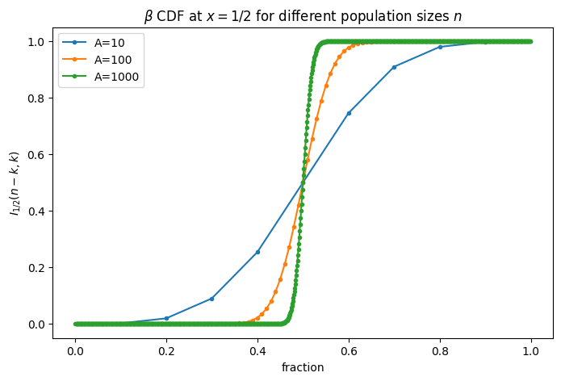
License: © 2025 Matthias Függer and Thomas Nowak. Licensed under CC BY-NC-SA 4.0.